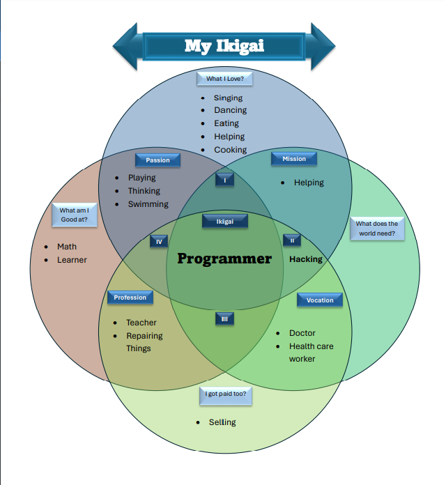
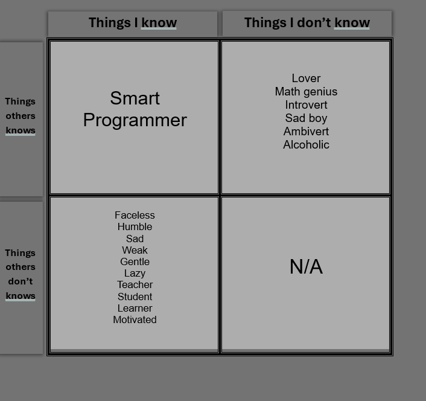
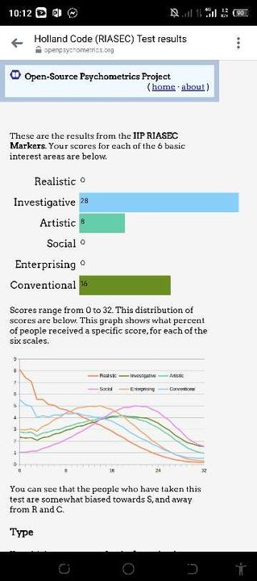

|
The importance of self-improvement lies in its ability to enrich
every aspect of life. Whether it's achieving personal goals,
advancing in one's career, or nurturing meaningful relationships,
continuous self-improvement is the key to unlocking one's full
potential and living a fulfilling and purposeful life.
|
|
Personal enhancement or self-improvement, refers to the process of
taking deliberate actions to enhance various aspects of oneself.
This can include developing new skills, improving existing
abilities, fostering positive habits, cultivating emotional
intelligence, expanding knowledge, setting and achieving goals,
and enhancing overall well-being.
|
Personal Enhancement
My Project, Task, and etc


My Projects
PRE LIM
In this part you'll see some of my project and what I've learned
MY IKIGAI
So, what I picked up from this lesson is basically seeing how awesome
I am! It's all about finding my "IKIGAI" and I know myself better than
anyone else. Only I can truly figure out what I want to do and what
I'm good at. It's kind of surprising, but it turns out that what I've
been doing led to some pretty cool outcomes.

MY JOARI WINDOW
Looking back on this, I gotta say, I didn't really learn much except
that I know myself better than anyone else does. It's kinda wild
though, hardly anyone in my class seems to know me at all. Makes me
wonder why that is, you know? That's probably why I always put up a
front in class. But hey, at least it's kinda nice flying under the
radar and being a bit of a mystery to everyone else.

MID TERM
MY RIASEC
My RIASEC scores show I am mainly Investigative and Conventional, with
a bit of Artistic. This means I like figuring things out and keeping
things in order. I also have a creative side. Jobs where I can analyze
data, organize information, and maybe add a creative touch could be
good for me. It is not just about finding the right job, it is about
knowing what I am good at and what I enjoy.
